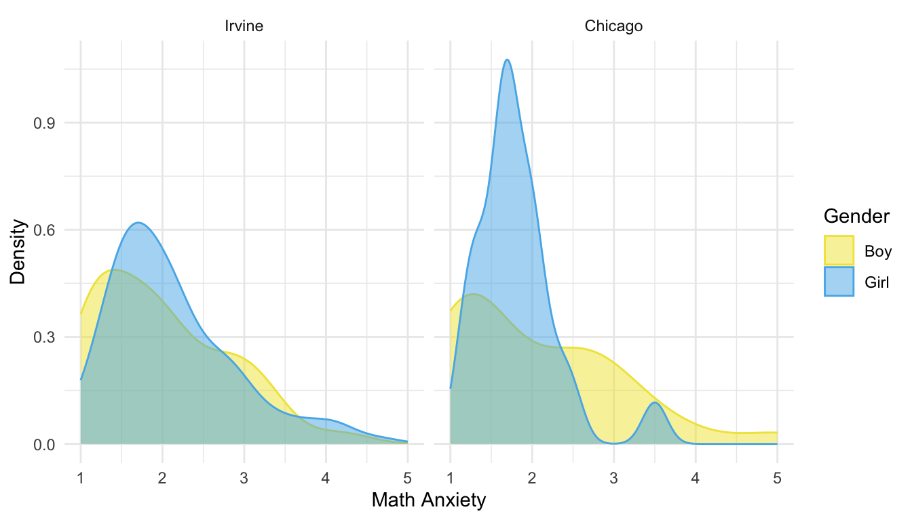
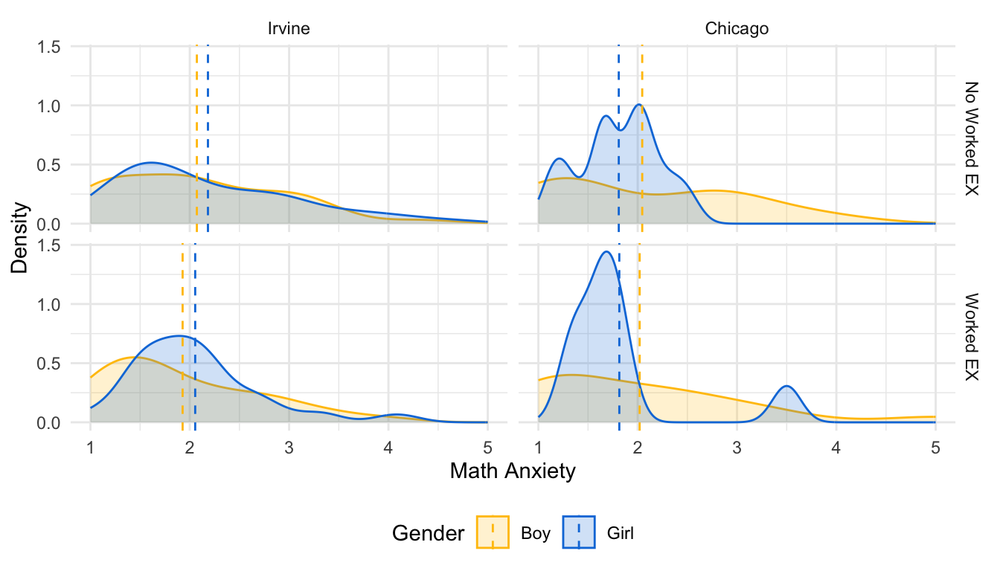

<!DOCTYPE html>
<html xmlns="http://www.w3.org/1999/xhtml" lang="en" xml:lang="en"><head>

<meta charset="utf-8">
<meta name="generator" content="quarto-1.3.353">

<meta name="viewport" content="width=device-width, initial-scale=1.0, user-scalable=yes">

<meta name="author" content="Emi Cervantes">
<meta name="dcterms.date" content="2023-07-17">

<title>Modeling 3</title>
<style>
code{white-space: pre-wrap;}
span.smallcaps{font-variant: small-caps;}
div.columns{display: flex; gap: min(4vw, 1.5em);}
div.column{flex: auto; overflow-x: auto;}
div.hanging-indent{margin-left: 1.5em; text-indent: -1.5em;}
ul.task-list{list-style: none;}
ul.task-list li input[type="checkbox"] {
  width: 0.8em;
  margin: 0 0.8em 0.2em -1em; /* quarto-specific, see https://github.com/quarto-dev/quarto-cli/issues/4556 */ 
  vertical-align: middle;
}
/* CSS for syntax highlighting */
pre > code.sourceCode { white-space: pre; position: relative; }
pre > code.sourceCode > span { display: inline-block; line-height: 1.25; }
pre > code.sourceCode > span:empty { height: 1.2em; }
.sourceCode { overflow: visible; }
code.sourceCode > span { color: inherit; text-decoration: inherit; }
div.sourceCode { margin: 1em 0; }
pre.sourceCode { margin: 0; }
@media screen {
div.sourceCode { overflow: auto; }
}
@media print {
pre > code.sourceCode { white-space: pre-wrap; }
pre > code.sourceCode > span { text-indent: -5em; padding-left: 5em; }
}
pre.numberSource code
  { counter-reset: source-line 0; }
pre.numberSource code > span
  { position: relative; left: -4em; counter-increment: source-line; }
pre.numberSource code > span > a:first-child::before
  { content: counter(source-line);
    position: relative; left: -1em; text-align: right; vertical-align: baseline;
    border: none; display: inline-block;
    -webkit-touch-callout: none; -webkit-user-select: none;
    -khtml-user-select: none; -moz-user-select: none;
    -ms-user-select: none; user-select: none;
    padding: 0 4px; width: 4em;
  }
pre.numberSource { margin-left: 3em;  padding-left: 4px; }
div.sourceCode
  {   }
@media screen {
pre > code.sourceCode > span > a:first-child::before { text-decoration: underline; }
}
</style>


<script src="modeling3_files/libs/clipboard/clipboard.min.js"></script>
<script src="modeling3_files/libs/quarto-html/quarto.js"></script>
<script src="modeling3_files/libs/quarto-html/popper.min.js"></script>
<script src="modeling3_files/libs/quarto-html/tippy.umd.min.js"></script>
<script src="modeling3_files/libs/quarto-html/anchor.min.js"></script>
<link href="modeling3_files/libs/quarto-html/tippy.css" rel="stylesheet">
<link href="modeling3_files/libs/quarto-html/quarto-syntax-highlighting.css" rel="stylesheet" id="quarto-text-highlighting-styles">
<script src="modeling3_files/libs/bootstrap/bootstrap.min.js"></script>
<link href="modeling3_files/libs/bootstrap/bootstrap-icons.css" rel="stylesheet">
<link href="modeling3_files/libs/bootstrap/bootstrap.min.css" rel="stylesheet" id="quarto-bootstrap" data-mode="light">


</head>

<body>

<div id="quarto-content" class="page-columns page-rows-contents page-layout-article">
<div id="quarto-margin-sidebar" class="sidebar margin-sidebar">
  <nav id="TOC" role="doc-toc" class="toc-active">
    <h2 id="toc-title">Table of contents</h2>
   
  <ul>
  <li><a href="#modeling-final-part-i" id="toc-modeling-final-part-i" class="nav-link active" data-scroll-target="#modeling-final-part-i"><span class="header-section-number">1</span> Modeling (Final PART I)</a></li>
  <li><a href="#load-libraries" id="toc-load-libraries" class="nav-link" data-scroll-target="#load-libraries"><span class="header-section-number">2</span> Load Libraries</a></li>
  <li><a href="#load-dataset" id="toc-load-dataset" class="nav-link" data-scroll-target="#load-dataset"><span class="header-section-number">3</span> Load Dataset</a>
  <ul class="collapse">
  <li><a href="#clean-dataset" id="toc-clean-dataset" class="nav-link" data-scroll-target="#clean-dataset"><span class="header-section-number">3.1</span> Clean Dataset</a></li>
  </ul></li>
  <li><a href="#math-anxiety-by-gender-and-group" id="toc-math-anxiety-by-gender-and-group" class="nav-link" data-scroll-target="#math-anxiety-by-gender-and-group"><span class="header-section-number">4</span> Math Anxiety by Gender and Group</a></li>
  <li><a href="#relationship-between-math-anxiety-and-learning-achievements" id="toc-relationship-between-math-anxiety-and-learning-achievements" class="nav-link" data-scroll-target="#relationship-between-math-anxiety-and-learning-achievements"><span class="header-section-number">5</span> Relationship between Math Anxiety and Learning Achievements</a>
  <ul class="collapse">
  <li><a href="#linear-regression" id="toc-linear-regression" class="nav-link" data-scroll-target="#linear-regression"><span class="header-section-number">5.1</span> Linear Regression</a>
  <ul class="collapse">
  <li><a href="#posttest-accuracy-scores" id="toc-posttest-accuracy-scores" class="nav-link" data-scroll-target="#posttest-accuracy-scores"><span class="header-section-number">5.1.1</span> Posttest Accuracy Scores</a></li>
  <li><a href="#perceived-understanding" id="toc-perceived-understanding" class="nav-link" data-scroll-target="#perceived-understanding"><span class="header-section-number">5.1.2</span> Perceived Understanding</a></li>
  </ul></li>
  </ul></li>
  <li><a href="#results" id="toc-results" class="nav-link" data-scroll-target="#results"><span class="header-section-number">6</span> Results</a></li>
  </ul>
<div class="quarto-alternate-formats"><h2>Other Formats</h2><ul><li><a href="modeling3.pdf"><i class="bi bi-file-pdf"></i>PDF</a></li><li><a href="modeling3.docx"><i class="bi bi-file-word"></i>MS Word</a></li></ul></div></nav>
</div>
<main class="content" id="quarto-document-content">

<header id="title-block-header" class="quarto-title-block default">
<div class="quarto-title">
<h1 class="title">Modeling 3</h1>
</div>


<div class="quarto-title-meta">

    <div>
    <div class="quarto-title-meta-heading">Author</div>
    <div class="quarto-title-meta-contents">
             <p>Emi Cervantes </p>
          </div>
  </div>
    
    <div>
    <div class="quarto-title-meta-heading">Published</div>
    <div class="quarto-title-meta-contents">
      <p class="date">July 17, 2023</p>
    </div>
  </div>
  
    
  </div>
  

</header>

<section id="modeling-final-part-i" class="level1" data-number="1">
<h1 data-number="1"><span class="header-section-number">1</span> Modeling (Final PART I)</h1>
</section>
<section id="load-libraries" class="level1" data-number="2">
<h1 data-number="2"><span class="header-section-number">2</span> Load Libraries</h1>
<div class="cell">
<div class="sourceCode cell-code" id="cb1"><pre class="sourceCode r code-with-copy"><code class="sourceCode r"><span id="cb1-1"><a href="#cb1-1" aria-hidden="true" tabindex="-1"></a><span class="fu">library</span>(tidyverse)</span></code><button title="Copy to Clipboard" class="code-copy-button"><i class="bi"></i></button></pre></div>
<div class="cell-output cell-output-stderr">
<pre><code>── Attaching core tidyverse packages ──────────────────────── tidyverse 2.0.0 ──
✔ dplyr     1.1.2     ✔ readr     2.1.4
✔ forcats   1.0.0     ✔ stringr   1.5.0
✔ ggplot2   3.4.2     ✔ tibble    3.2.1
✔ lubridate 1.9.2     ✔ tidyr     1.3.0
✔ purrr     1.0.1     
── Conflicts ────────────────────────────────────────── tidyverse_conflicts() ──
✖ dplyr::filter() masks stats::filter()
✖ dplyr::lag()    masks stats::lag()
ℹ Use the ]8;;http://conflicted.r-lib.org/conflicted package]8;; to force all conflicts to become errors</code></pre>
</div>
<div class="sourceCode cell-code" id="cb3"><pre class="sourceCode r code-with-copy"><code class="sourceCode r"><span id="cb3-1"><a href="#cb3-1" aria-hidden="true" tabindex="-1"></a><span class="fu">library</span>(sjPlot)</span></code><button title="Copy to Clipboard" class="code-copy-button"><i class="bi"></i></button></pre></div>
<div class="cell-output cell-output-stderr">
<pre><code>Learn more about sjPlot with 'browseVignettes("sjPlot")'.</code></pre>
</div>
<div class="sourceCode cell-code" id="cb5"><pre class="sourceCode r code-with-copy"><code class="sourceCode r"><span id="cb5-1"><a href="#cb5-1" aria-hidden="true" tabindex="-1"></a><span class="fu">library</span>(sjmisc)</span></code><button title="Copy to Clipboard" class="code-copy-button"><i class="bi"></i></button></pre></div>
<div class="cell-output cell-output-stderr">
<pre><code>
Attaching package: 'sjmisc'

The following object is masked from 'package:purrr':

    is_empty

The following object is masked from 'package:tidyr':

    replace_na

The following object is masked from 'package:tibble':

    add_case</code></pre>
</div>
<div class="sourceCode cell-code" id="cb7"><pre class="sourceCode r code-with-copy"><code class="sourceCode r"><span id="cb7-1"><a href="#cb7-1" aria-hidden="true" tabindex="-1"></a><span class="fu">library</span>(sjlabelled)</span></code><button title="Copy to Clipboard" class="code-copy-button"><i class="bi"></i></button></pre></div>
<div class="cell-output cell-output-stderr">
<pre><code>
Attaching package: 'sjlabelled'

The following object is masked from 'package:forcats':

    as_factor

The following object is masked from 'package:dplyr':

    as_label

The following object is masked from 'package:ggplot2':

    as_label</code></pre>
</div>
</div>
</section>
<section id="load-dataset" class="level1" data-number="3">
<h1 data-number="3"><span class="header-section-number">3</span> Load Dataset</h1>
<div class="cell">
<div class="sourceCode cell-code" id="cb9"><pre class="sourceCode r code-with-copy"><code class="sourceCode r"><span id="cb9-1"><a href="#cb9-1" aria-hidden="true" tabindex="-1"></a>df <span class="ot">&lt;-</span> readxl<span class="sc">::</span><span class="fu">read_xlsx</span>(<span class="st">'../../../data/math-anxiety-raw-data.xlsx'</span>)</span></code><button title="Copy to Clipboard" class="code-copy-button"><i class="bi"></i></button></pre></div>
<div class="cell-output cell-output-stderr">
<pre><code>New names:
• `Subject ID #` -&gt; `Subject ID #...8`
• `Subject ID #` -&gt; `Subject ID #...9`
• `StartDate` -&gt; `StartDate...11`
• `EndDate` -&gt; `EndDate...12`
• `Progress` -&gt; `Progress...13`
• `Duration (in seconds)` -&gt; `Duration (in seconds)...17`
• `Finished` -&gt; `Finished...18`
• `RecordedDate` -&gt; `RecordedDate...19`
• `Browser_info_Browser` -&gt; `Browser_info_Browser...20`
• `Browser_info_Version` -&gt; `Browser_info_Version...21`
• `Browser_info_Operating System` -&gt; `Browser_info_Operating System...22`
• `Browser_info_Resolution` -&gt; `Browser_info_Resolution...23`
• `Misc_0` -&gt; `Misc_0...36`
• `Misc_1` -&gt; `Misc_1...100`
• `Misc_2` -&gt; `Misc_2...145`
• `MW_control_1` -&gt; `MW_control_1...210`
• `MW_control_2` -&gt; `MW_control_2...211`
• `MW_control_3` -&gt; `MW_control_3...212`
• `MW_control_4` -&gt; `MW_control_4...213`
• `MW_control_5` -&gt; `MW_control_5...214`
• `` -&gt; `...219`
• `StartDate` -&gt; `StartDate...221`
• `EndDate` -&gt; `EndDate...222`
• `Progress` -&gt; `Progress...223`
• `Duration (in seconds)` -&gt; `Duration (in seconds)...224`
• `Finished` -&gt; `Finished...225`
• `RecordedDate` -&gt; `RecordedDate...226`
• `Browser_info_Browser` -&gt; `Browser_info_Browser...227`
• `Browser_info_Version` -&gt; `Browser_info_Version...228`
• `Browser_info_Operating System` -&gt; `Browser_info_Operating System...229`
• `Browser_info_Resolution` -&gt; `Browser_info_Resolution...230`
• `Misc_0` -&gt; `Misc_0...232`
• `Misc_1` -&gt; `Misc_1...239`
• `Misc_2` -&gt; `Misc_2...290`
• `MW_control_1` -&gt; `MW_control_1...295`
• `MW_control_2` -&gt; `MW_control_2...296`
• `MW_control_3` -&gt; `MW_control_3...297`
• `MW_control_4` -&gt; `MW_control_4...298`
• `MW_control_5` -&gt; `MW_control_5...299`</code></pre>
</div>
</div>
<section id="clean-dataset" class="level2" data-number="3.1">
<h2 data-number="3.1" class="anchored" data-anchor-id="clean-dataset"><span class="header-section-number">3.1</span> Clean Dataset</h2>
<div class="cell">
<div class="sourceCode cell-code" id="cb11"><pre class="sourceCode r code-with-copy"><code class="sourceCode r"><span id="cb11-1"><a href="#cb11-1" aria-hidden="true" tabindex="-1"></a>tma_lst <span class="ot">&lt;-</span> <span class="fu">c</span>(<span class="st">"TMA_1"</span>, <span class="st">"TMA_2"</span>, <span class="st">"TMA_3"</span>,<span class="st">"TMA_4"</span>, <span class="st">"TMA_5"</span>, <span class="st">"TMA_6"</span>,</span>
<span id="cb11-2"><a href="#cb11-2" aria-hidden="true" tabindex="-1"></a>             <span class="st">"TMA_sum"</span>, <span class="st">"TMA_avg"</span>)</span>
<span id="cb11-3"><a href="#cb11-3" aria-hidden="true" tabindex="-1"></a>df1 <span class="ot">&lt;-</span> df <span class="sc">%&gt;%</span> <span class="fu">select</span>(Condition, Sex, chicago, nonwhite, pretest,</span>
<span id="cb11-4"><a href="#cb11-4" aria-hidden="true" tabindex="-1"></a>              MW_day1_avg, MW_day2_avg, SI_avg, tma_lst,</span>
<span id="cb11-5"><a href="#cb11-5" aria-hidden="true" tabindex="-1"></a>              Understand_avg, Del_OverallAcc)</span></code><button title="Copy to Clipboard" class="code-copy-button"><i class="bi"></i></button></pre></div>
<div class="cell-output cell-output-stderr">
<pre><code>Warning: Using an external vector in selections was deprecated in tidyselect 1.1.0.
ℹ Please use `all_of()` or `any_of()` instead.
  # Was:
  data %&gt;% select(tma_lst)

  # Now:
  data %&gt;% select(all_of(tma_lst))

See &lt;https://tidyselect.r-lib.org/reference/faq-external-vector.html&gt;.</code></pre>
</div>
<div class="sourceCode cell-code" id="cb13"><pre class="sourceCode r code-with-copy"><code class="sourceCode r"><span id="cb13-1"><a href="#cb13-1" aria-hidden="true" tabindex="-1"></a><span class="co"># Get rid of row that has NA values in Condition and/or Sex</span></span>
<span id="cb13-2"><a href="#cb13-2" aria-hidden="true" tabindex="-1"></a>df1 <span class="ot">&lt;-</span> df1 <span class="sc">%&gt;%</span> <span class="fu">filter</span>(Condition <span class="sc">==</span> <span class="dv">1</span> <span class="sc">|</span> Condition <span class="sc">==</span> <span class="dv">2</span>)</span>
<span id="cb13-3"><a href="#cb13-3" aria-hidden="true" tabindex="-1"></a>df1 <span class="ot">&lt;-</span> df1 <span class="sc">%&gt;%</span> <span class="fu">filter</span>(<span class="sc">!</span><span class="fu">is.na</span>(Sex))</span>
<span id="cb13-4"><a href="#cb13-4" aria-hidden="true" tabindex="-1"></a>df1<span class="sc">$</span>Condition[df1<span class="sc">$</span>Condition <span class="sc">==</span> <span class="dv">2</span>] <span class="ot">&lt;-</span> <span class="dv">0</span></span>
<span id="cb13-5"><a href="#cb13-5" aria-hidden="true" tabindex="-1"></a><span class="co"># Assign 0 for "boy" and 1 for "girl"</span></span>
<span id="cb13-6"><a href="#cb13-6" aria-hidden="true" tabindex="-1"></a>df1<span class="sc">$</span>Sex[df1<span class="sc">$</span>Sex <span class="sc">==</span> <span class="dv">1</span>] <span class="ot">&lt;-</span> <span class="dv">0</span></span>
<span id="cb13-7"><a href="#cb13-7" aria-hidden="true" tabindex="-1"></a>df1<span class="sc">$</span>Sex[df1<span class="sc">$</span>Sex <span class="sc">==</span> <span class="dv">2</span>] <span class="ot">&lt;-</span> <span class="dv">1</span></span>
<span id="cb13-8"><a href="#cb13-8" aria-hidden="true" tabindex="-1"></a><span class="co"># Make sure variable is categorical</span></span>
<span id="cb13-9"><a href="#cb13-9" aria-hidden="true" tabindex="-1"></a>df1<span class="sc">$</span>chicago <span class="ot">&lt;-</span> <span class="fu">as.factor</span>(df1<span class="sc">$</span>chicago)</span>
<span id="cb13-10"><a href="#cb13-10" aria-hidden="true" tabindex="-1"></a>df1<span class="sc">$</span>Sex <span class="ot">&lt;-</span> <span class="fu">as.factor</span>(df1<span class="sc">$</span>Sex)</span></code><button title="Copy to Clipboard" class="code-copy-button"><i class="bi"></i></button></pre></div>
</div>
</section>
</section>
<section id="math-anxiety-by-gender-and-group" class="level1" data-number="4">
<h1 data-number="4"><span class="header-section-number">4</span> Math Anxiety by Gender and Group</h1>
<div class="cell">
<div class="sourceCode cell-code" id="cb14"><pre class="sourceCode r code-with-copy"><code class="sourceCode r"><span id="cb14-1"><a href="#cb14-1" aria-hidden="true" tabindex="-1"></a>cond <span class="ot">&lt;-</span> <span class="fu">c</span>(<span class="st">"No Worked EX"</span>, <span class="st">"Worked EX"</span>)</span>
<span id="cb14-2"><a href="#cb14-2" aria-hidden="true" tabindex="-1"></a><span class="fu">names</span>(cond) <span class="ot">&lt;-</span> <span class="fu">c</span>(<span class="dv">0</span>, <span class="dv">1</span>)</span>
<span id="cb14-3"><a href="#cb14-3" aria-hidden="true" tabindex="-1"></a>location <span class="ot">&lt;-</span> <span class="fu">c</span>(<span class="st">"Irvine"</span>, <span class="st">"Chicago"</span>)</span>
<span id="cb14-4"><a href="#cb14-4" aria-hidden="true" tabindex="-1"></a><span class="fu">names</span>(location) <span class="ot">&lt;-</span> <span class="fu">c</span>(<span class="dv">0</span>, <span class="dv">1</span>)</span>
<span id="cb14-5"><a href="#cb14-5" aria-hidden="true" tabindex="-1"></a></span>
<span id="cb14-6"><a href="#cb14-6" aria-hidden="true" tabindex="-1"></a>df1 <span class="sc">%&gt;%</span> <span class="fu">ggplot</span>(<span class="fu">aes</span>(<span class="at">x =</span> TMA_avg, <span class="at">fill =</span> Sex,</span>
<span id="cb14-7"><a href="#cb14-7" aria-hidden="true" tabindex="-1"></a>                   <span class="at">color =</span> Sex)) <span class="sc">+</span></span>
<span id="cb14-8"><a href="#cb14-8" aria-hidden="true" tabindex="-1"></a>  <span class="fu">geom_density</span>(<span class="at">alpha =</span> <span class="fl">0.5</span>) <span class="sc">+</span></span>
<span id="cb14-9"><a href="#cb14-9" aria-hidden="true" tabindex="-1"></a>  <span class="fu">theme_minimal</span>() <span class="sc">+</span></span>
<span id="cb14-10"><a href="#cb14-10" aria-hidden="true" tabindex="-1"></a>  <span class="fu">facet_grid</span>(<span class="at">cols =</span> <span class="fu">vars</span>(chicago),</span>
<span id="cb14-11"><a href="#cb14-11" aria-hidden="true" tabindex="-1"></a>             <span class="at">labeller =</span> <span class="fu">labeller</span>(<span class="at">chicago =</span> location)) <span class="sc">+</span></span>
<span id="cb14-12"><a href="#cb14-12" aria-hidden="true" tabindex="-1"></a>  <span class="fu">scale_fill_manual</span>(<span class="at">values =</span> <span class="fu">c</span>(<span class="st">"#F0E442"</span>, <span class="st">"#56B4E9"</span>), <span class="at">labels =</span> <span class="fu">c</span>(<span class="st">"Boy"</span>, <span class="st">"Girl"</span>)) <span class="sc">+</span></span>
<span id="cb14-13"><a href="#cb14-13" aria-hidden="true" tabindex="-1"></a>  <span class="fu">scale_color_manual</span>(<span class="at">values =</span> <span class="fu">c</span>(<span class="st">"#F0E442"</span>, <span class="st">"#56B4E9"</span>), <span class="at">labels =</span> <span class="fu">c</span>(<span class="st">"Boy"</span>, <span class="st">"Girl"</span>)) <span class="sc">+</span></span>
<span id="cb14-14"><a href="#cb14-14" aria-hidden="true" tabindex="-1"></a>  <span class="fu">labs</span>(<span class="at">x =</span> <span class="st">"Math Anxiety"</span>, <span class="at">y =</span> <span class="st">"Density"</span>,</span>
<span id="cb14-15"><a href="#cb14-15" aria-hidden="true" tabindex="-1"></a>       <span class="at">fill =</span> <span class="st">"Gender"</span>, <span class="at">color =</span> <span class="st">"Gender"</span>)</span></code><button title="Copy to Clipboard" class="code-copy-button"><i class="bi"></i></button></pre></div>
<div class="cell-output-display">
<p></p>
</div>
</div>
<div class="cell">
<div class="sourceCode cell-code" id="cb15"><pre class="sourceCode r code-with-copy"><code class="sourceCode r"><span id="cb15-1"><a href="#cb15-1" aria-hidden="true" tabindex="-1"></a>mu <span class="ot">&lt;-</span> df1 <span class="sc">%&gt;%</span> <span class="fu">group_by</span>(chicago, Condition, Sex) <span class="sc">%&gt;%</span> <span class="fu">summarize</span>(<span class="at">mean =</span> <span class="fu">mean</span>(TMA_avg))</span></code><button title="Copy to Clipboard" class="code-copy-button"><i class="bi"></i></button></pre></div>
<div class="cell-output cell-output-stderr">
<pre><code>`summarise()` has grouped output by 'chicago', 'Condition'. You can override
using the `.groups` argument.</code></pre>
</div>
<div class="sourceCode cell-code" id="cb17"><pre class="sourceCode r code-with-copy"><code class="sourceCode r"><span id="cb17-1"><a href="#cb17-1" aria-hidden="true" tabindex="-1"></a>tma_hist_plt <span class="ot">&lt;-</span> df1 <span class="sc">%&gt;%</span> <span class="fu">ggplot</span>(<span class="fu">aes</span>(<span class="at">x =</span> TMA_avg, <span class="at">fill =</span> Sex,</span>
<span id="cb17-2"><a href="#cb17-2" aria-hidden="true" tabindex="-1"></a>                   <span class="at">color =</span> Sex)) <span class="sc">+</span></span>
<span id="cb17-3"><a href="#cb17-3" aria-hidden="true" tabindex="-1"></a>  <span class="fu">geom_density</span>(<span class="at">alpha =</span> <span class="fl">0.2</span>) <span class="sc">+</span></span>
<span id="cb17-4"><a href="#cb17-4" aria-hidden="true" tabindex="-1"></a>  <span class="fu">theme_minimal</span>() <span class="sc">+</span></span>
<span id="cb17-5"><a href="#cb17-5" aria-hidden="true" tabindex="-1"></a>  <span class="fu">geom_vline</span>(<span class="at">data=</span>mu, <span class="fu">aes</span>(<span class="at">xintercept=</span>mean, <span class="at">color=</span>Sex),</span>
<span id="cb17-6"><a href="#cb17-6" aria-hidden="true" tabindex="-1"></a>           <span class="at">linetype=</span><span class="st">"dashed"</span>) <span class="sc">+</span></span>
<span id="cb17-7"><a href="#cb17-7" aria-hidden="true" tabindex="-1"></a>  <span class="fu">facet_grid</span>(<span class="at">rows =</span> <span class="fu">vars</span>(Condition),</span>
<span id="cb17-8"><a href="#cb17-8" aria-hidden="true" tabindex="-1"></a>             <span class="at">cols =</span> <span class="fu">vars</span>(chicago),</span>
<span id="cb17-9"><a href="#cb17-9" aria-hidden="true" tabindex="-1"></a>             <span class="at">labeller =</span> <span class="fu">labeller</span>(<span class="at">Condition =</span> cond,</span>
<span id="cb17-10"><a href="#cb17-10" aria-hidden="true" tabindex="-1"></a>                                 <span class="at">chicago =</span> location)) <span class="sc">+</span></span>
<span id="cb17-11"><a href="#cb17-11" aria-hidden="true" tabindex="-1"></a>  <span class="fu">scale_fill_manual</span>(<span class="at">values =</span> <span class="fu">c</span>(<span class="st">"#FFC20A"</span>, <span class="st">"#0C7BDC"</span>), <span class="at">labels =</span> <span class="fu">c</span>(<span class="st">"Boy"</span>, <span class="st">"Girl"</span>)) <span class="sc">+</span></span>
<span id="cb17-12"><a href="#cb17-12" aria-hidden="true" tabindex="-1"></a>  <span class="fu">scale_color_manual</span>(<span class="at">values =</span> <span class="fu">c</span>(<span class="st">"#FFC20A"</span>, <span class="st">"#0C7BDC"</span>), <span class="at">labels =</span> <span class="fu">c</span>(<span class="st">"Boy"</span>, <span class="st">"Girl"</span>)) <span class="sc">+</span></span>
<span id="cb17-13"><a href="#cb17-13" aria-hidden="true" tabindex="-1"></a>  <span class="fu">labs</span>(<span class="at">x =</span> <span class="st">"Math Anxiety"</span>, <span class="at">y =</span> <span class="st">"Density"</span>,</span>
<span id="cb17-14"><a href="#cb17-14" aria-hidden="true" tabindex="-1"></a>       <span class="at">fill =</span> <span class="st">"Gender"</span>, <span class="at">color =</span> <span class="st">"Gender"</span>) <span class="sc">+</span><span class="fu">theme</span>(<span class="at">legend.position=</span><span class="st">"bottom"</span>)</span>
<span id="cb17-15"><a href="#cb17-15" aria-hidden="true" tabindex="-1"></a><span class="fu">ggsave</span>(tma_hist_plt, <span class="at">file =</span>  <span class="st">"../../../outputs/tma_hist_plt.png"</span>,</span>
<span id="cb17-16"><a href="#cb17-16" aria-hidden="true" tabindex="-1"></a>       <span class="at">width =</span> <span class="dv">8</span>, <span class="at">height =</span> <span class="dv">5</span>)</span>
<span id="cb17-17"><a href="#cb17-17" aria-hidden="true" tabindex="-1"></a>tma_hist_plt</span></code><button title="Copy to Clipboard" class="code-copy-button"><i class="bi"></i></button></pre></div>
<div class="cell-output-display">
<p></p>
</div>
</div>
<p>We see from the figure that in Irvine schools, girls seemed to have a higher average math anxiety than boys in both condition. However, in Chicago schools, boys seemed to have a higher math anxiety than girls in both condition.</p>
<p>Girls seemed to have a higher math anxiety compared to boys overall. Check if the difference is significant by using ANOVA test:</p>
<div class="cell">
<div class="sourceCode cell-code" id="cb18"><pre class="sourceCode r code-with-copy"><code class="sourceCode r"><span id="cb18-1"><a href="#cb18-1" aria-hidden="true" tabindex="-1"></a>m1 <span class="ot">&lt;-</span> <span class="fu">aov</span>(TMA_avg <span class="sc">~</span> Condition <span class="sc">+</span> chicago <span class="sc">+</span> Sex <span class="sc">+</span> Condition<span class="sc">*</span>Sex, </span>
<span id="cb18-2"><a href="#cb18-2" aria-hidden="true" tabindex="-1"></a>          <span class="at">data =</span> df1)</span>
<span id="cb18-3"><a href="#cb18-3" aria-hidden="true" tabindex="-1"></a><span class="fu">summary</span>(m1)</span></code><button title="Copy to Clipboard" class="code-copy-button"><i class="bi"></i></button></pre></div>
<div class="cell-output cell-output-stdout">
<pre><code>               Df Sum Sq Mean Sq F value Pr(&gt;F)
Condition       1   0.52  0.5223   0.817  0.367
chicago         1   0.75  0.7512   1.175  0.279
Sex             1   0.08  0.0790   0.124  0.726
Condition:Sex   1   0.00  0.0007   0.001  0.974
Residuals     224 143.15  0.6391               </code></pre>
</div>
</div>
<p>No significant difference between gender on learning achievement and math anxiety was found by gender.</p>
</section>
<section id="relationship-between-math-anxiety-and-learning-achievements" class="level1" data-number="5">
<h1 data-number="5"><span class="header-section-number">5</span> Relationship between Math Anxiety and Learning Achievements</h1>
<section id="linear-regression" class="level2" data-number="5.1">
<h2 data-number="5.1" class="anchored" data-anchor-id="linear-regression"><span class="header-section-number">5.1</span> Linear Regression</h2>
<p>We will be fitting two different models to our data: one for predicting <code>Del_OverallAcc</code> and <code>Understand_avg</code>.</p>
<section id="posttest-accuracy-scores" class="level3" data-number="5.1.1">
<h3 data-number="5.1.1" class="anchored" data-anchor-id="posttest-accuracy-scores"><span class="header-section-number">5.1.1</span> Posttest Accuracy Scores</h3>
<div class="cell">
<div class="sourceCode cell-code" id="cb20"><pre class="sourceCode r code-with-copy"><code class="sourceCode r"><span id="cb20-1"><a href="#cb20-1" aria-hidden="true" tabindex="-1"></a><span class="co"># Check if there's any participant missing accuracy score data</span></span>
<span id="cb20-2"><a href="#cb20-2" aria-hidden="true" tabindex="-1"></a>df1 <span class="sc">%&gt;%</span> <span class="fu">count</span>(<span class="fu">is.na</span>(Del_OverallAcc))</span></code><button title="Copy to Clipboard" class="code-copy-button"><i class="bi"></i></button></pre></div>
<div class="cell-output cell-output-stdout">
<pre><code># A tibble: 1 × 2
  `is.na(Del_OverallAcc)`     n
  &lt;lgl&gt;                   &lt;int&gt;
1 FALSE                     229</code></pre>
</div>
</div>
<p>Every participant has a <code>Del_OverallAcc</code> data, now we fit the model to our data to predict <code>Del_OverallAcc</code>:</p>
<div class="cell">
<div class="sourceCode cell-code" id="cb22"><pre class="sourceCode r code-with-copy"><code class="sourceCode r"><span id="cb22-1"><a href="#cb22-1" aria-hidden="true" tabindex="-1"></a><span class="co"># Fit model</span></span>
<span id="cb22-2"><a href="#cb22-2" aria-hidden="true" tabindex="-1"></a>m2 <span class="ot">&lt;-</span> Del_OverallAcc <span class="sc">~</span> TMA_avg <span class="sc">+</span> MW_day2_avg <span class="sc">+</span> SI_avg <span class="sc">+</span> chicago <span class="sc">+</span> Condition <span class="sc">+</span> Condition<span class="sc">*</span>Sex <span class="sc">+</span> Condition<span class="sc">*</span>TMA_avg <span class="sc">+</span> Condition<span class="sc">*</span>TMA_avg<span class="sc">*</span>Sex</span>
<span id="cb22-3"><a href="#cb22-3" aria-hidden="true" tabindex="-1"></a>fit2 <span class="ot">&lt;-</span> <span class="fu">lm</span>(m2, <span class="at">data =</span> df1)</span>
<span id="cb22-4"><a href="#cb22-4" aria-hidden="true" tabindex="-1"></a><span class="fu">summary</span>(fit2)</span></code><button title="Copy to Clipboard" class="code-copy-button"><i class="bi"></i></button></pre></div>
<div class="cell-output cell-output-stdout">
<pre><code>
Call:
lm(formula = m2, data = df1)

Residuals:
     Min       1Q   Median       3Q      Max 
-0.46538 -0.14589  0.01385  0.13172  0.45656 

Coefficients:
                         Estimate Std. Error t value Pr(&gt;|t|)    
(Intercept)              0.788237   0.103465   7.618 7.76e-13 ***
TMA_avg                 -0.074960   0.035766  -2.096   0.0372 *  
MW_day2_avg             -0.013978   0.015217  -0.919   0.3593    
SI_avg                   0.023579   0.015840   1.489   0.1380    
chicago1                -0.247140   0.033346  -7.411 2.72e-12 ***
Condition1              -0.227621   0.102029  -2.231   0.0267 *  
Sex1                    -0.004203   0.104076  -0.040   0.9678    
Condition1:Sex1          0.115987   0.148327   0.782   0.4351    
TMA_avg:Condition1       0.117154   0.046947   2.495   0.0133 *  
TMA_avg:Sex1            -0.011958   0.046340  -0.258   0.7966    
TMA_avg:Condition1:Sex1 -0.066023   0.067743  -0.975   0.3308    
---
Signif. codes:  0 '***' 0.001 '**' 0.01 '*' 0.05 '.' 0.1 ' ' 1

Residual standard error: 0.1995 on 218 degrees of freedom
Multiple R-squared:  0.2576,    Adjusted R-squared:  0.2235 
F-statistic: 7.563 on 10 and 218 DF,  p-value: 2.516e-10</code></pre>
</div>
</div>
<p><strong>Significant Predictors</strong></p>
<ul>
<li><p><code>TMA_avg</code> (p = 0.0372): While controlling for other predictors, every 1 unit of increase in math anxiety decreases accuracy scores by 0.075.</p></li>
<li><p><code>TMA_avg:Condition</code> (p = 0.0133): Students who received worked examples, while controlling for other predictors, had increase in accuracy by 0.04 for every 1 unit increase in math anxiety.</p></li>
<li><p>Other significant predictors include: <code>chicago</code> (p = 2.72e-12), <code>Condition</code> (p = 0.0267)</p></li>
</ul>
</section>
<section id="perceived-understanding" class="level3" data-number="5.1.2">
<h3 data-number="5.1.2" class="anchored" data-anchor-id="perceived-understanding"><span class="header-section-number">5.1.2</span> Perceived Understanding</h3>
<div class="cell">
<div class="sourceCode cell-code" id="cb24"><pre class="sourceCode r code-with-copy"><code class="sourceCode r"><span id="cb24-1"><a href="#cb24-1" aria-hidden="true" tabindex="-1"></a><span class="co"># Check if there's any participant missing understanding data</span></span>
<span id="cb24-2"><a href="#cb24-2" aria-hidden="true" tabindex="-1"></a>df1 <span class="sc">%&gt;%</span> <span class="fu">count</span>(<span class="fu">is.na</span>(Understand_avg))</span></code><button title="Copy to Clipboard" class="code-copy-button"><i class="bi"></i></button></pre></div>
<div class="cell-output cell-output-stdout">
<pre><code># A tibble: 2 × 2
  `is.na(Understand_avg)`     n
  &lt;lgl&gt;                   &lt;int&gt;
1 FALSE                     227
2 TRUE                        2</code></pre>
</div>
</div>
<p>2 participants were missing <code>Understand_avg</code> data (row #56 and #198)</p>
<div class="cell">
<div class="sourceCode cell-code" id="cb26"><pre class="sourceCode r code-with-copy"><code class="sourceCode r"><span id="cb26-1"><a href="#cb26-1" aria-hidden="true" tabindex="-1"></a><span class="co"># Fill out missing understanding avg data with the group average</span></span>
<span id="cb26-2"><a href="#cb26-2" aria-hidden="true" tabindex="-1"></a>understand_avg1 <span class="ot">&lt;-</span> df1 <span class="sc">%&gt;%</span> <span class="fu">filter</span>(Condition <span class="sc">==</span> <span class="dv">1</span> <span class="sc">&amp;</span> Sex <span class="sc">==</span> <span class="dv">0</span> <span class="sc">&amp;</span> chicago <span class="sc">==</span> <span class="dv">0</span>) <span class="sc">%&gt;%</span> <span class="fu">summarize</span>(<span class="at">mean_understand =</span> <span class="fu">mean</span>(Understand_avg, <span class="at">na.rm =</span> <span class="cn">TRUE</span>))</span>
<span id="cb26-3"><a href="#cb26-3" aria-hidden="true" tabindex="-1"></a>understand_avg2 <span class="ot">&lt;-</span> df1 <span class="sc">%&gt;%</span> <span class="fu">filter</span>(Condition <span class="sc">==</span> <span class="dv">0</span> <span class="sc">&amp;</span> Sex <span class="sc">==</span> <span class="dv">0</span> <span class="sc">&amp;</span> chicago <span class="sc">==</span> <span class="dv">0</span>) <span class="sc">%&gt;%</span> <span class="fu">summarize</span>(<span class="at">mean_understand =</span> <span class="fu">mean</span>(Understand_avg, <span class="at">na.rm =</span> <span class="cn">TRUE</span>))</span>
<span id="cb26-4"><a href="#cb26-4" aria-hidden="true" tabindex="-1"></a><span class="co"># assign imputed value</span></span>
<span id="cb26-5"><a href="#cb26-5" aria-hidden="true" tabindex="-1"></a>df1[<span class="dv">56</span>, <span class="dv">17</span>] <span class="ot">=</span> understand_avg1</span>
<span id="cb26-6"><a href="#cb26-6" aria-hidden="true" tabindex="-1"></a>df1[<span class="dv">198</span>, <span class="dv">17</span>] <span class="ot">=</span> understand_avg1</span></code><button title="Copy to Clipboard" class="code-copy-button"><i class="bi"></i></button></pre></div>
</div>
<p>Every participant now has a <code>Understand_avg</code> data, now we fit the model to our data to predict <code>Understand_avg</code>:</p>
<div class="cell">
<div class="sourceCode cell-code" id="cb27"><pre class="sourceCode r code-with-copy"><code class="sourceCode r"><span id="cb27-1"><a href="#cb27-1" aria-hidden="true" tabindex="-1"></a>m3 <span class="ot">&lt;-</span> Understand_avg <span class="sc">~</span> TMA_avg <span class="sc">+</span> MW_day2_avg <span class="sc">+</span> SI_avg <span class="sc">+</span> chicago <span class="sc">+</span> Condition <span class="sc">+</span> Condition<span class="sc">*</span>Sex <span class="sc">+</span> Condition<span class="sc">*</span>TMA_avg <span class="sc">+</span> Condition<span class="sc">*</span>TMA_avg<span class="sc">*</span>Sex</span>
<span id="cb27-2"><a href="#cb27-2" aria-hidden="true" tabindex="-1"></a>fit3 <span class="ot">&lt;-</span> <span class="fu">lm</span>(m3, <span class="at">data =</span> df1)</span>
<span id="cb27-3"><a href="#cb27-3" aria-hidden="true" tabindex="-1"></a><span class="fu">summary</span>(fit3)</span></code><button title="Copy to Clipboard" class="code-copy-button"><i class="bi"></i></button></pre></div>
<div class="cell-output cell-output-stdout">
<pre><code>
Call:
lm(formula = m3, data = df1)

Residuals:
    Min      1Q  Median      3Q     Max 
-61.937 -10.233   4.723  12.935  44.362 

Coefficients:
                        Estimate Std. Error t value Pr(&gt;|t|)    
(Intercept)              70.6464    10.2858   6.868 6.69e-11 ***
TMA_avg                  -0.6890     3.5556  -0.194 0.846526    
MW_day2_avg              -6.2254     1.5128  -4.115 5.49e-05 ***
SI_avg                    7.0573     1.5747   4.482 1.20e-05 ***
chicago1                -11.5941     3.3150  -3.497 0.000569 ***
Condition1               -1.6788    10.1430  -0.166 0.868697    
Sex1                      1.8821    10.3465   0.182 0.855824    
Condition1:Sex1           4.8053    14.7456   0.326 0.744826    
TMA_avg:Condition1       -1.0156     4.6671  -0.218 0.827933    
TMA_avg:Sex1             -2.3541     4.6068  -0.511 0.609857    
TMA_avg:Condition1:Sex1   0.6709     6.7345   0.100 0.920735    
---
Signif. codes:  0 '***' 0.001 '**' 0.01 '*' 0.05 '.' 0.1 ' ' 1

Residual standard error: 19.84 on 218 degrees of freedom
Multiple R-squared:  0.2522,    Adjusted R-squared:  0.2178 
F-statistic:  7.35 on 10 and 218 DF,  p-value: 5.119e-10</code></pre>
</div>
</div>
<p><strong>Significant Predictors</strong></p>
<ul>
<li><p><code>MW_day2_avg</code> (p = 5.49e-05): While controlling for other predictors, every 1 unit of increase in mind wandering decreases perceived understanding by 6.2254.</p></li>
<li><p><code>SI_avg</code> (p = 1.20e-05): While controlling for other predictors, every 1 unit of increase in situational interest decreases perceived understanding by 7.0573.</p></li>
<li><p><code>chicago</code> (p = 0.00056)</p></li>
</ul>
<div class="cell">
<div class="sourceCode cell-code" id="cb29"><pre class="sourceCode r code-with-copy"><code class="sourceCode r"><span id="cb29-1"><a href="#cb29-1" aria-hidden="true" tabindex="-1"></a><span class="co"># Display result as a table</span></span>
<span id="cb29-2"><a href="#cb29-2" aria-hidden="true" tabindex="-1"></a><span class="fu">tab_model</span>(fit2, fit3,</span>
<span id="cb29-3"><a href="#cb29-3" aria-hidden="true" tabindex="-1"></a>          <span class="at">pred.labels =</span> <span class="fu">c</span>(<span class="st">"Intercept"</span>, <span class="st">"Math </span></span>
<span id="cb29-4"><a href="#cb29-4" aria-hidden="true" tabindex="-1"></a><span class="st">                          Anxiety"</span>, <span class="st">"Mind </span></span>
<span id="cb29-5"><a href="#cb29-5" aria-hidden="true" tabindex="-1"></a><span class="st">                          Wandering"</span>, </span>
<span id="cb29-6"><a href="#cb29-6" aria-hidden="true" tabindex="-1"></a>                          <span class="st">"Situational </span></span>
<span id="cb29-7"><a href="#cb29-7" aria-hidden="true" tabindex="-1"></a><span class="st">                          Interest"</span>, <span class="st">"Site (Chicago)"</span>, <span class="st">"Condition (Worked EX)"</span>, <span class="st">"Gender (boy)"</span>, <span class="st">"Condition (Worked EX)*Gender (boy)"</span>, <span class="st">"Math Anxiety*Condition (Worked EX)"</span>, <span class="st">"Math Anxiety*Gender (boy)"</span>, <span class="st">"Math Anxiety*Condition (Worked EX)*Gender (boy)"</span>),</span>
<span id="cb29-8"><a href="#cb29-8" aria-hidden="true" tabindex="-1"></a>  <span class="at">dv.labels =</span> <span class="fu">c</span>(<span class="st">"Posttest Accuracy"</span>, <span class="st">"Perceived Understanding"</span>))</span></code><button title="Copy to Clipboard" class="code-copy-button"><i class="bi"></i></button></pre></div>
<div class="cell-output-display">
<table data-quarto-postprocess="true" class="table table-sm table-striped small">
<tbody>
<tr class="odd">
<td data-quarto-table-cell-role="th" style="text-align: center; border-top: double; font-style: normal; font-weight: bold; padding: 0.2cm;">&nbsp;</td>
<td colspan="3" data-quarto-table-cell-role="th" style="text-align: center; border-top: double; font-style: normal; font-weight: bold; padding: 0.2cm;">Posttest Accuracy</td>
<td colspan="3" data-quarto-table-cell-role="th" style="text-align: center; border-top: double; font-style: normal; font-weight: bold; padding: 0.2cm;">Perceived Understanding</td>
</tr>
<tr class="even">
<td style="text-align: center; border-bottom: 1px solid; font-style: italic; font-weight: normal;">Predictors</td>
<td style="text-align: center; border-bottom: 1px solid; font-style: italic; font-weight: normal;">Estimates</td>
<td style="text-align: center; border-bottom: 1px solid; font-style: italic; font-weight: normal;">CI</td>
<td style="text-align: center; border-bottom: 1px solid; font-style: italic; font-weight: normal;">p</td>
<td style="text-align: center; border-bottom: 1px solid; font-style: italic; font-weight: normal;">Estimates</td>
<td style="text-align: center; border-bottom: 1px solid; font-style: italic; font-weight: normal;">CI</td>
<td style="text-align: center;">p</td>
</tr>
<tr class="odd">
<td style="text-align: left; padding: 0.2cm; vertical-align: top;">Intercept</td>
<td style="text-align: left; padding: 0.2cm; vertical-align: top;">0.79</td>
<td style="text-align: left; padding: 0.2cm; vertical-align: top;">0.58&nbsp;–&nbsp;0.99</td>
<td style="text-align: left; padding: 0.2cm; vertical-align: top;"><strong>&lt;0.001</strong></td>
<td style="text-align: left; padding: 0.2cm; vertical-align: top;">70.65</td>
<td style="text-align: left; padding: 0.2cm; vertical-align: top;">50.37&nbsp;–&nbsp;90.92</td>
<td style="text-align: center;"><strong>&lt;0.001</strong></td>
</tr>
<tr class="even">
<td style="text-align: left; padding: 0.2cm; vertical-align: top;">Math Anxiety</td>
<td style="text-align: left; padding: 0.2cm; vertical-align: top;">-0.07</td>
<td style="text-align: left; padding: 0.2cm; vertical-align: top;">-0.15&nbsp;–&nbsp;-0.00</td>
<td style="text-align: left; padding: 0.2cm; vertical-align: top;"><strong>0.037</strong></td>
<td style="text-align: left; padding: 0.2cm; vertical-align: top;">-0.69</td>
<td style="text-align: left; padding: 0.2cm; vertical-align: top;">-7.70&nbsp;–&nbsp;6.32</td>
<td style="text-align: center;">0.847</td>
</tr>
<tr class="odd">
<td style="text-align: left; padding: 0.2cm; vertical-align: top;">Mind Wandering</td>
<td style="text-align: left; padding: 0.2cm; vertical-align: top;">-0.01</td>
<td style="text-align: left; padding: 0.2cm; vertical-align: top;">-0.04&nbsp;–&nbsp;0.02</td>
<td style="text-align: left; padding: 0.2cm; vertical-align: top;">0.359</td>
<td style="text-align: left; padding: 0.2cm; vertical-align: top;">-6.23</td>
<td style="text-align: left; padding: 0.2cm; vertical-align: top;">-9.21&nbsp;–&nbsp;-3.24</td>
<td style="text-align: center;"><strong>&lt;0.001</strong></td>
</tr>
<tr class="even">
<td style="text-align: left; padding: 0.2cm; vertical-align: top;">Situational Interest</td>
<td style="text-align: left; padding: 0.2cm; vertical-align: top;">0.02</td>
<td style="text-align: left; padding: 0.2cm; vertical-align: top;">-0.01&nbsp;–&nbsp;0.05</td>
<td style="text-align: left; padding: 0.2cm; vertical-align: top;">0.138</td>
<td style="text-align: left; padding: 0.2cm; vertical-align: top;">7.06</td>
<td style="text-align: left; padding: 0.2cm; vertical-align: top;">3.95&nbsp;–&nbsp;10.16</td>
<td style="text-align: center;"><strong>&lt;0.001</strong></td>
</tr>
<tr class="odd">
<td style="text-align: left; padding: 0.2cm; vertical-align: top;">Site (Chicago)</td>
<td style="text-align: left; padding: 0.2cm; vertical-align: top;">-0.25</td>
<td style="text-align: left; padding: 0.2cm; vertical-align: top;">-0.31&nbsp;–&nbsp;-0.18</td>
<td style="text-align: left; padding: 0.2cm; vertical-align: top;"><strong>&lt;0.001</strong></td>
<td style="text-align: left; padding: 0.2cm; vertical-align: top;">-11.59</td>
<td style="text-align: left; padding: 0.2cm; vertical-align: top;">-18.13&nbsp;–&nbsp;-5.06</td>
<td style="text-align: center;"><strong>0.001</strong></td>
</tr>
<tr class="even">
<td style="text-align: left; padding: 0.2cm; vertical-align: top;">Condition (Worked EX)</td>
<td style="text-align: left; padding: 0.2cm; vertical-align: top;">-0.23</td>
<td style="text-align: left; padding: 0.2cm; vertical-align: top;">-0.43&nbsp;–&nbsp;-0.03</td>
<td style="text-align: left; padding: 0.2cm; vertical-align: top;"><strong>0.027</strong></td>
<td style="text-align: left; padding: 0.2cm; vertical-align: top;">-1.68</td>
<td style="text-align: left; padding: 0.2cm; vertical-align: top;">-21.67&nbsp;–&nbsp;18.31</td>
<td style="text-align: center;">0.869</td>
</tr>
<tr class="odd">
<td style="text-align: left; padding: 0.2cm; vertical-align: top;">Gender (boy)</td>
<td style="text-align: left; padding: 0.2cm; vertical-align: top;">-0.00</td>
<td style="text-align: left; padding: 0.2cm; vertical-align: top;">-0.21&nbsp;–&nbsp;0.20</td>
<td style="text-align: left; padding: 0.2cm; vertical-align: top;">0.968</td>
<td style="text-align: left; padding: 0.2cm; vertical-align: top;">1.88</td>
<td style="text-align: left; padding: 0.2cm; vertical-align: top;">-18.51&nbsp;–&nbsp;22.27</td>
<td style="text-align: center;">0.856</td>
</tr>
<tr class="even">
<td style="text-align: left; padding: 0.2cm; vertical-align: top;">Condition (Worked EX)*Gender (boy)</td>
<td style="text-align: left; padding: 0.2cm; vertical-align: top;">0.12</td>
<td style="text-align: left; padding: 0.2cm; vertical-align: top;">-0.18&nbsp;–&nbsp;0.41</td>
<td style="text-align: left; padding: 0.2cm; vertical-align: top;">0.435</td>
<td style="text-align: left; padding: 0.2cm; vertical-align: top;">4.81</td>
<td style="text-align: left; padding: 0.2cm; vertical-align: top;">-24.26&nbsp;–&nbsp;33.87</td>
<td style="text-align: center;">0.745</td>
</tr>
<tr class="odd">
<td style="text-align: left; padding: 0.2cm; vertical-align: top;">Math Anxiety*Condition (Worked EX)</td>
<td style="text-align: left; padding: 0.2cm; vertical-align: top;">0.12</td>
<td style="text-align: left; padding: 0.2cm; vertical-align: top;">0.02&nbsp;–&nbsp;0.21</td>
<td style="text-align: left; padding: 0.2cm; vertical-align: top;"><strong>0.013</strong></td>
<td style="text-align: left; padding: 0.2cm; vertical-align: top;">-1.02</td>
<td style="text-align: left; padding: 0.2cm; vertical-align: top;">-10.21&nbsp;–&nbsp;8.18</td>
<td style="text-align: center;">0.828</td>
</tr>
<tr class="even">
<td style="text-align: left; padding: 0.2cm; vertical-align: top;">Math Anxiety*Gender (boy)</td>
<td style="text-align: left; padding: 0.2cm; vertical-align: top;">-0.01</td>
<td style="text-align: left; padding: 0.2cm; vertical-align: top;">-0.10&nbsp;–&nbsp;0.08</td>
<td style="text-align: left; padding: 0.2cm; vertical-align: top;">0.797</td>
<td style="text-align: left; padding: 0.2cm; vertical-align: top;">-2.35</td>
<td style="text-align: left; padding: 0.2cm; vertical-align: top;">-11.43&nbsp;–&nbsp;6.73</td>
<td style="text-align: center;">0.610</td>
</tr>
<tr class="odd">
<td style="text-align: left; padding: 0.2cm; vertical-align: top;">Math Anxiety*Condition (Worked EX)*Gender (boy)</td>
<td style="text-align: left; padding: 0.2cm; vertical-align: top;">-0.07</td>
<td style="text-align: left; padding: 0.2cm; vertical-align: top;">-0.20&nbsp;–&nbsp;0.07</td>
<td style="text-align: left; padding: 0.2cm; vertical-align: top;">0.331</td>
<td style="text-align: left; padding: 0.2cm; vertical-align: top;">0.67</td>
<td style="text-align: left; padding: 0.2cm; vertical-align: top;">-12.60&nbsp;–&nbsp;13.94</td>
<td style="text-align: center;">0.921</td>
</tr>
<tr class="even">
<td style="text-align: left; padding: 0.2cm; vertical-align: top; padding-top: 0.1cm; padding-bottom: 0.1cm; border-top: 1px solid;">Observations</td>
<td colspan="3" style="text-align: left; padding: 0.2cm; vertical-align: top; padding-top: 0.1cm; padding-bottom: 0.1cm; border-top: 1px solid;">229</td>
<td colspan="3" style="text-align: left; padding: 0.2cm; vertical-align: top; padding-top: 0.1cm; padding-bottom: 0.1cm; border-top: 1px solid;">229</td>
</tr>
<tr class="odd">
<td style="text-align: left; padding: 0.2cm; vertical-align: top; padding-top: 0.1cm; padding-bottom: 0.1cm;">R<sup>2</sup> / R<sup>2</sup> adjusted</td>
<td colspan="3" style="text-align: left; padding: 0.2cm; vertical-align: top; padding-top: 0.1cm; padding-bottom: 0.1cm;">0.258 / 0.224</td>
<td colspan="3" style="text-align: left; padding: 0.2cm; vertical-align: top; padding-top: 0.1cm; padding-bottom: 0.1cm;">0.252 / 0.218</td>
</tr>
</tbody>
</table>


</div>
</div>
</section>
</section>
</section>
<section id="results" class="level1" data-number="6">
<h1 data-number="6"><span class="header-section-number">6</span> Results</h1>
<ul>
<li><p>No significant effect was found by gender on either math anxiety or learning achievements</p></li>
<li><p>However, we saw that worked examples were overall effective in reducing the effect of math anxiety on posttest accuracy scores, regardless of gender and sites</p></li>
<li><p>No significant effect was found by math anxiety on perceived understanding. Instead, mind wandering and situational interest were two dominant significant predictors.</p></li>
<li><p>Students in Chicago significantly performed worst in learning achievements</p></li>
</ul>
</section>

</main>
<!-- /main column -->
<script id="quarto-html-after-body" type="application/javascript">
window.document.addEventListener("DOMContentLoaded", function (event) {
  const toggleBodyColorMode = (bsSheetEl) => {
    const mode = bsSheetEl.getAttribute("data-mode");
    const bodyEl = window.document.querySelector("body");
    if (mode === "dark") {
      bodyEl.classList.add("quarto-dark");
      bodyEl.classList.remove("quarto-light");
    } else {
      bodyEl.classList.add("quarto-light");
      bodyEl.classList.remove("quarto-dark");
    }
  }
  const toggleBodyColorPrimary = () => {
    const bsSheetEl = window.document.querySelector("link#quarto-bootstrap");
    if (bsSheetEl) {
      toggleBodyColorMode(bsSheetEl);
    }
  }
  toggleBodyColorPrimary();  
  const icon = "";
  const anchorJS = new window.AnchorJS();
  anchorJS.options = {
    placement: 'right',
    icon: icon
  };
  anchorJS.add('.anchored');
  const isCodeAnnotation = (el) => {
    for (const clz of el.classList) {
      if (clz.startsWith('code-annotation-')) {                     
        return true;
      }
    }
    return false;
  }
  const clipboard = new window.ClipboardJS('.code-copy-button', {
    text: function(trigger) {
      const codeEl = trigger.previousElementSibling.cloneNode(true);
      for (const childEl of codeEl.children) {
        if (isCodeAnnotation(childEl)) {
          childEl.remove();
        }
      }
      return codeEl.innerText;
    }
  });
  clipboard.on('success', function(e) {
    // button target
    const button = e.trigger;
    // don't keep focus
    button.blur();
    // flash "checked"
    button.classList.add('code-copy-button-checked');
    var currentTitle = button.getAttribute("title");
    button.setAttribute("title", "Copied!");
    let tooltip;
    if (window.bootstrap) {
      button.setAttribute("data-bs-toggle", "tooltip");
      button.setAttribute("data-bs-placement", "left");
      button.setAttribute("data-bs-title", "Copied!");
      tooltip = new bootstrap.Tooltip(button, 
        { trigger: "manual", 
          customClass: "code-copy-button-tooltip",
          offset: [0, -8]});
      tooltip.show();    
    }
    setTimeout(function() {
      if (tooltip) {
        tooltip.hide();
        button.removeAttribute("data-bs-title");
        button.removeAttribute("data-bs-toggle");
        button.removeAttribute("data-bs-placement");
      }
      button.setAttribute("title", currentTitle);
      button.classList.remove('code-copy-button-checked');
    }, 1000);
    // clear code selection
    e.clearSelection();
  });
  function tippyHover(el, contentFn) {
    const config = {
      allowHTML: true,
      content: contentFn,
      maxWidth: 500,
      delay: 100,
      arrow: false,
      appendTo: function(el) {
          return el.parentElement;
      },
      interactive: true,
      interactiveBorder: 10,
      theme: 'quarto',
      placement: 'bottom-start'
    };
    window.tippy(el, config); 
  }
  const noterefs = window.document.querySelectorAll('a[role="doc-noteref"]');
  for (var i=0; i<noterefs.length; i++) {
    const ref = noterefs[i];
    tippyHover(ref, function() {
      // use id or data attribute instead here
      let href = ref.getAttribute('data-footnote-href') || ref.getAttribute('href');
      try { href = new URL(href).hash; } catch {}
      const id = href.replace(/^#\/?/, "");
      const note = window.document.getElementById(id);
      return note.innerHTML;
    });
  }
      let selectedAnnoteEl;
      const selectorForAnnotation = ( cell, annotation) => {
        let cellAttr = 'data-code-cell="' + cell + '"';
        let lineAttr = 'data-code-annotation="' +  annotation + '"';
        const selector = 'span[' + cellAttr + '][' + lineAttr + ']';
        return selector;
      }
      const selectCodeLines = (annoteEl) => {
        const doc = window.document;
        const targetCell = annoteEl.getAttribute("data-target-cell");
        const targetAnnotation = annoteEl.getAttribute("data-target-annotation");
        const annoteSpan = window.document.querySelector(selectorForAnnotation(targetCell, targetAnnotation));
        const lines = annoteSpan.getAttribute("data-code-lines").split(",");
        const lineIds = lines.map((line) => {
          return targetCell + "-" + line;
        })
        let top = null;
        let height = null;
        let parent = null;
        if (lineIds.length > 0) {
            //compute the position of the single el (top and bottom and make a div)
            const el = window.document.getElementById(lineIds[0]);
            top = el.offsetTop;
            height = el.offsetHeight;
            parent = el.parentElement.parentElement;
          if (lineIds.length > 1) {
            const lastEl = window.document.getElementById(lineIds[lineIds.length - 1]);
            const bottom = lastEl.offsetTop + lastEl.offsetHeight;
            height = bottom - top;
          }
          if (top !== null && height !== null && parent !== null) {
            // cook up a div (if necessary) and position it 
            let div = window.document.getElementById("code-annotation-line-highlight");
            if (div === null) {
              div = window.document.createElement("div");
              div.setAttribute("id", "code-annotation-line-highlight");
              div.style.position = 'absolute';
              parent.appendChild(div);
            }
            div.style.top = top - 2 + "px";
            div.style.height = height + 4 + "px";
            let gutterDiv = window.document.getElementById("code-annotation-line-highlight-gutter");
            if (gutterDiv === null) {
              gutterDiv = window.document.createElement("div");
              gutterDiv.setAttribute("id", "code-annotation-line-highlight-gutter");
              gutterDiv.style.position = 'absolute';
              const codeCell = window.document.getElementById(targetCell);
              const gutter = codeCell.querySelector('.code-annotation-gutter');
              gutter.appendChild(gutterDiv);
            }
            gutterDiv.style.top = top - 2 + "px";
            gutterDiv.style.height = height + 4 + "px";
          }
          selectedAnnoteEl = annoteEl;
        }
      };
      const unselectCodeLines = () => {
        const elementsIds = ["code-annotation-line-highlight", "code-annotation-line-highlight-gutter"];
        elementsIds.forEach((elId) => {
          const div = window.document.getElementById(elId);
          if (div) {
            div.remove();
          }
        });
        selectedAnnoteEl = undefined;
      };
      // Attach click handler to the DT
      const annoteDls = window.document.querySelectorAll('dt[data-target-cell]');
      for (const annoteDlNode of annoteDls) {
        annoteDlNode.addEventListener('click', (event) => {
          const clickedEl = event.target;
          if (clickedEl !== selectedAnnoteEl) {
            unselectCodeLines();
            const activeEl = window.document.querySelector('dt[data-target-cell].code-annotation-active');
            if (activeEl) {
              activeEl.classList.remove('code-annotation-active');
            }
            selectCodeLines(clickedEl);
            clickedEl.classList.add('code-annotation-active');
          } else {
            // Unselect the line
            unselectCodeLines();
            clickedEl.classList.remove('code-annotation-active');
          }
        });
      }
  const findCites = (el) => {
    const parentEl = el.parentElement;
    if (parentEl) {
      const cites = parentEl.dataset.cites;
      if (cites) {
        return {
          el,
          cites: cites.split(' ')
        };
      } else {
        return findCites(el.parentElement)
      }
    } else {
      return undefined;
    }
  };
  var bibliorefs = window.document.querySelectorAll('a[role="doc-biblioref"]');
  for (var i=0; i<bibliorefs.length; i++) {
    const ref = bibliorefs[i];
    const citeInfo = findCites(ref);
    if (citeInfo) {
      tippyHover(citeInfo.el, function() {
        var popup = window.document.createElement('div');
        citeInfo.cites.forEach(function(cite) {
          var citeDiv = window.document.createElement('div');
          citeDiv.classList.add('hanging-indent');
          citeDiv.classList.add('csl-entry');
          var biblioDiv = window.document.getElementById('ref-' + cite);
          if (biblioDiv) {
            citeDiv.innerHTML = biblioDiv.innerHTML;
          }
          popup.appendChild(citeDiv);
        });
        return popup.innerHTML;
      });
    }
  }
});
</script>
</div> <!-- /content -->


</body></html>